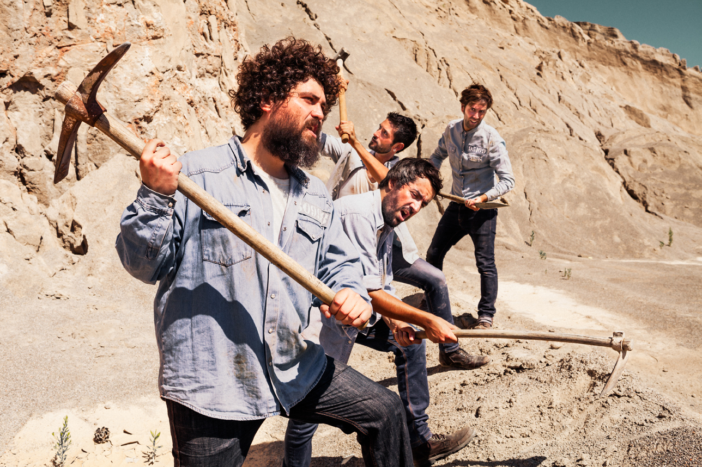

jTravel
The Experience
Menu Despegable
Inicio
Buscar Viaje
Crear Viaje
Registro
Perfil
Login
Nosotros
Cerrar Sesion
Acerca de Nosotros

Integrantes de la practica:
Jose Manuel Palau Alegria
Jose Vicente Anton Coy
Somos de la carrera de Ingenieria Multimedia, y esta es la practica nº1 de Programacion Hipermedia II, solo se puede realizar con CSS y HTML.
Dificultades:
Menu Hamburguesa: Nos a costado bastante diseñar el menu hamburguesa nativo en css